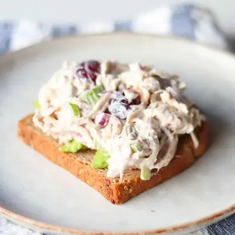

Chicken Salad with Grapes

Ingredients
- 2 cups cooked chicken, shredded or diced
- 1/2 cup diced celery
- 1/4 cup diced red onion
- 1 cup seedless grapes, halved
- 1/4 cup chopped walnuts
- 1/2 cup plain Greek yogurt
- 1/4 cup mayonnaise (use avocado oil mayonnaise for a healthier option)
- 1 tablespoon dijon mustard
- 1/4 teaspoon salt
- 1 tablespoon fresh lemon juice
Steps
- In a mixing bowl, add the chicken, grapes, celery, red onion, and walnuts.
- In a small bowl, whisk together the Greek yogurt, mayonnaise, Dijon mustard, fresh lemon juice, and salt until smooth.
- Pour the sauce into the bowl with the chicken and toss gently to coat everything evenly.
- Taste the chicken salad and adjust the seasoning with more salt, dijon mustard, or lemon juice if needed. Enjoy!
Recipe by Min Kwon · Kidfriendly Meals, from MJ and Hungryman. Saved here for personal use; the original has the full notes, tips and photos. Open original